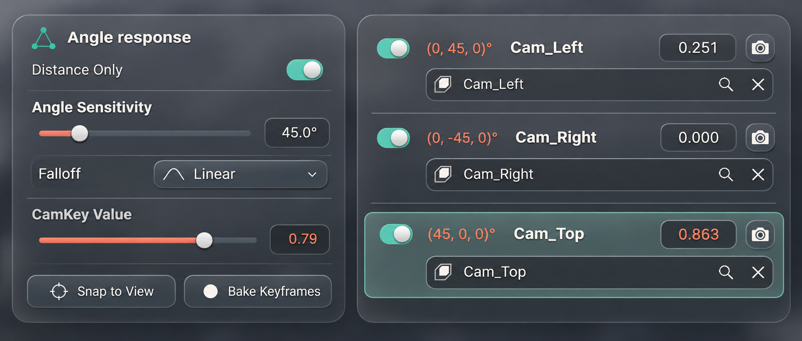
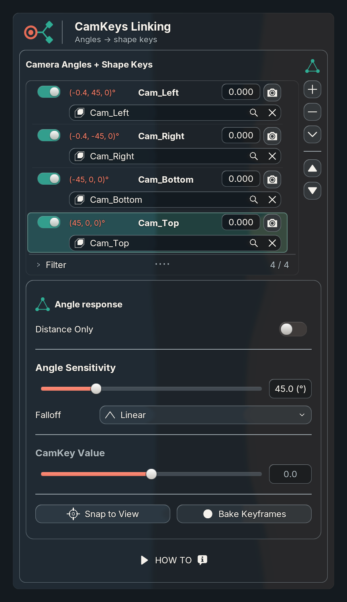
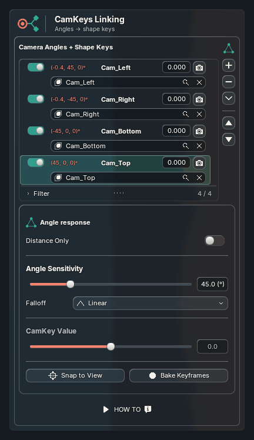
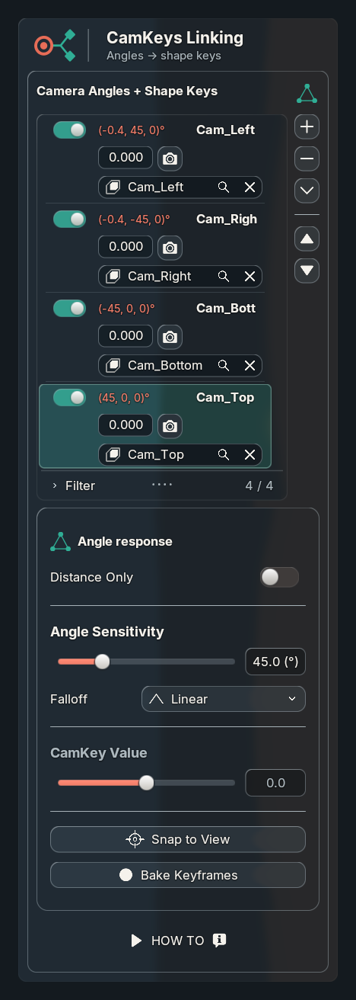
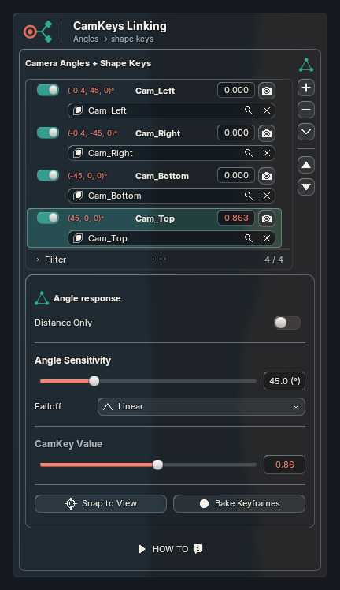
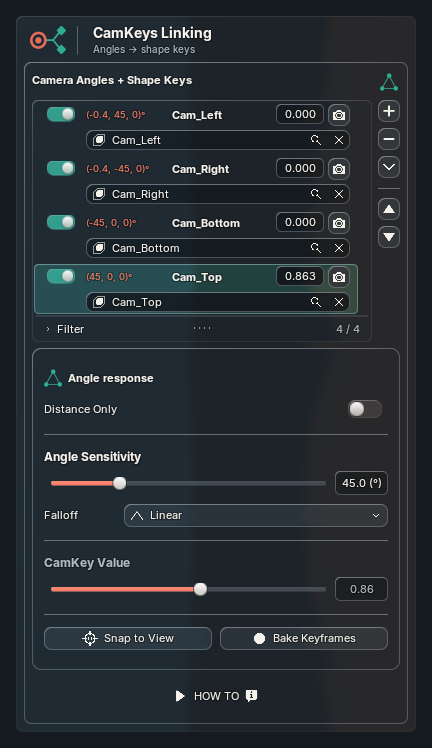

← OverviewCamKeys response and live-value feedback
The requested bullseye now marks Snap to View. A shared response card groups sensitivity, falloff and actions. Captured pitch/yaw direction appears in the configurable coral accent, aligned with the shape-key search border. Changing values briefly use that same accent, then settle.
Generated design target

Concept uses different values and backdrop. Actual controls retain native ownership and conditional visibility; Distance Only is off when angle settings are shown.Actual Blender · 400 logical units

Captured from saved Uraraka in Blender 5.2.2 at 2×. Reference typography and backdrop are not pixel-identical.Changing → settled

Both the list value and CamKey Value turn coral as values change. Hold: 0.22 s; fade: 0.18 s. Existing glass and motion remain enabled.Narrow · 280 units

Accessory rows and bottom actions wrap at their minimum widths.Active accent

Settled ink

389 unit tests; actual consumer checks passed on Blender 5.1.2 and 5.2.2. No activation events in these capture launches. The paired warm CPU-submission sample measured approximately 2.12 ms disabled / 2.18 ms active (70 samples per mode), with no layout rebuilds or retained glass-resource growth. This is not a live-scene FPS benchmark.
Validation and limitations · Configuration API